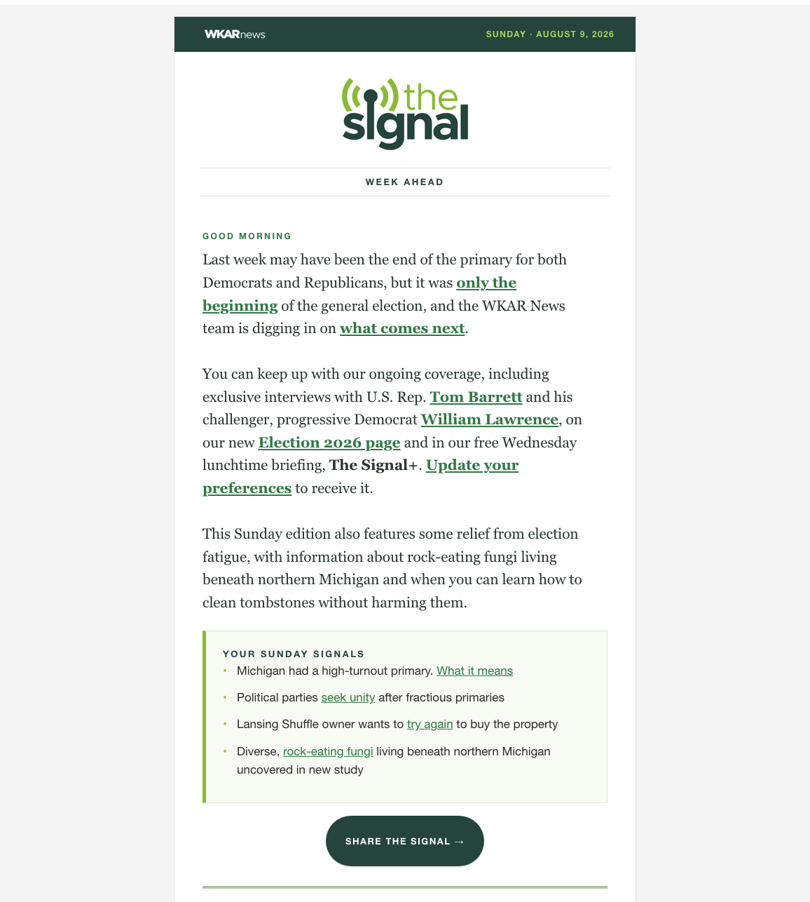
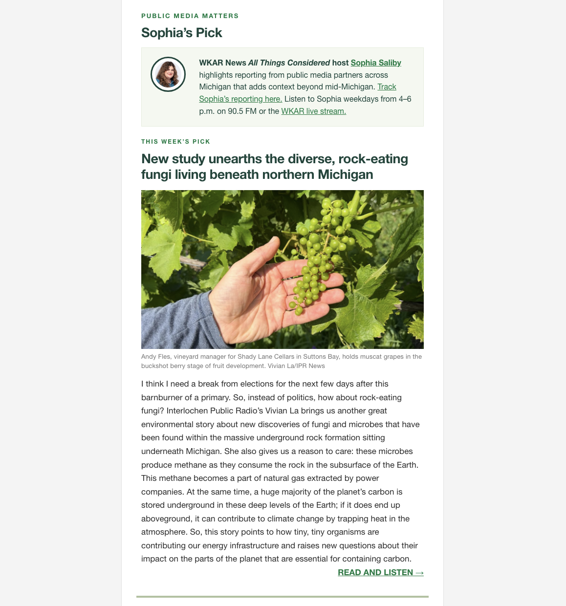
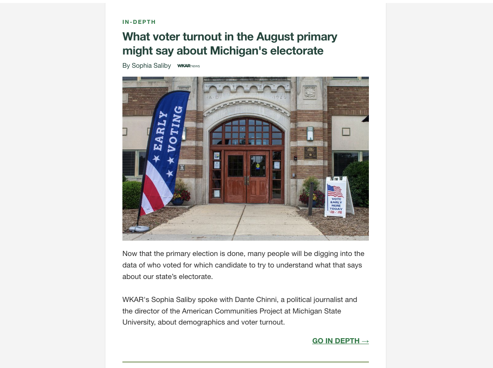
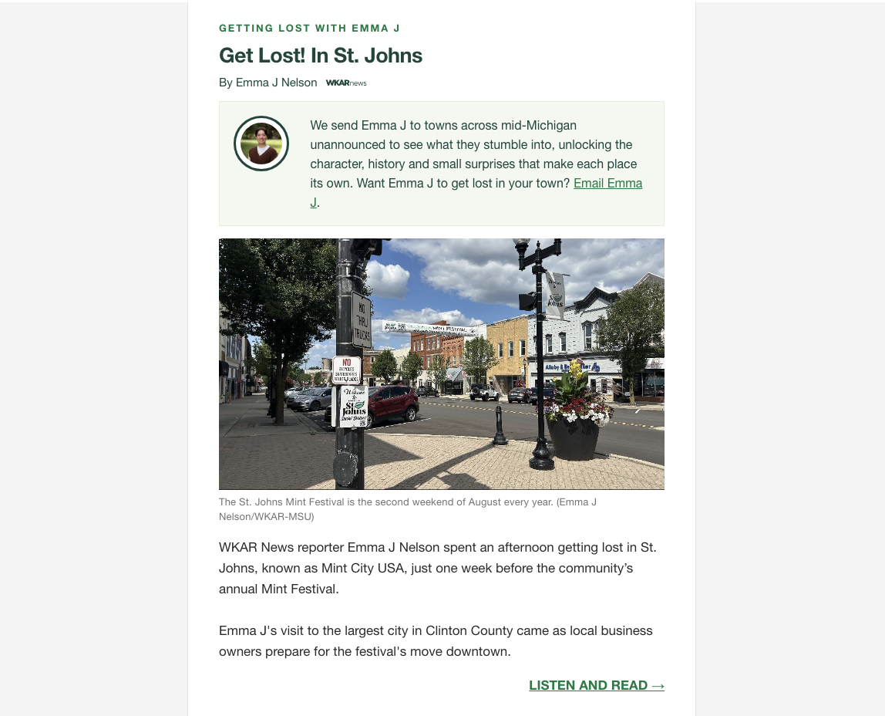
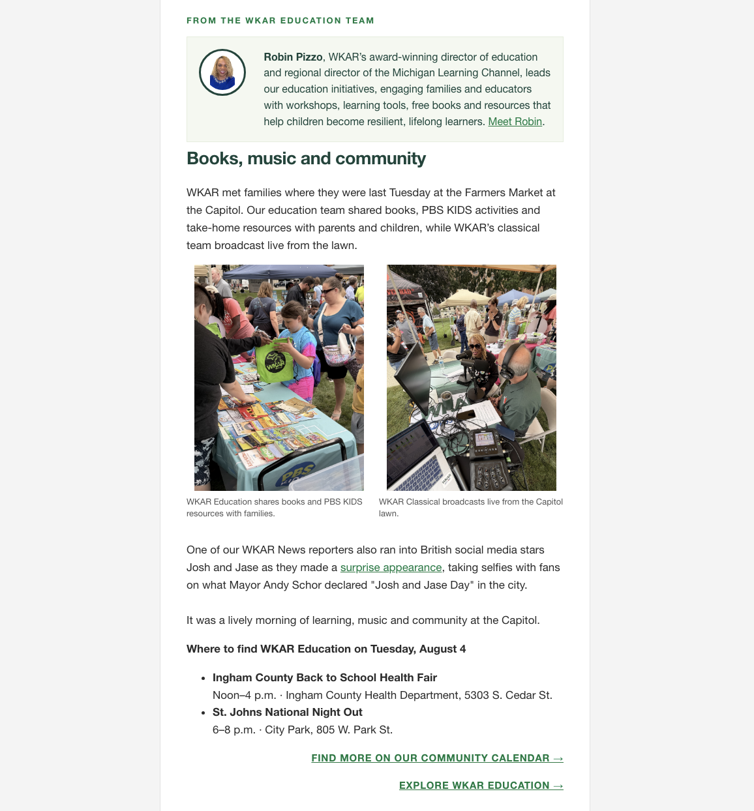
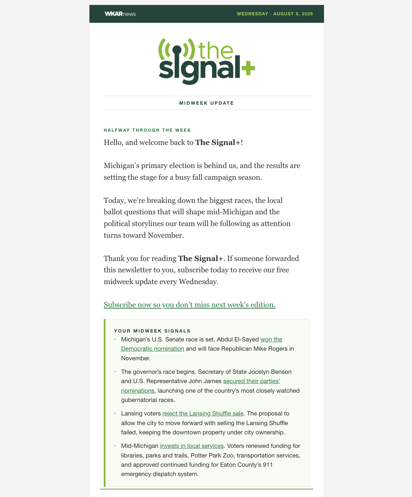
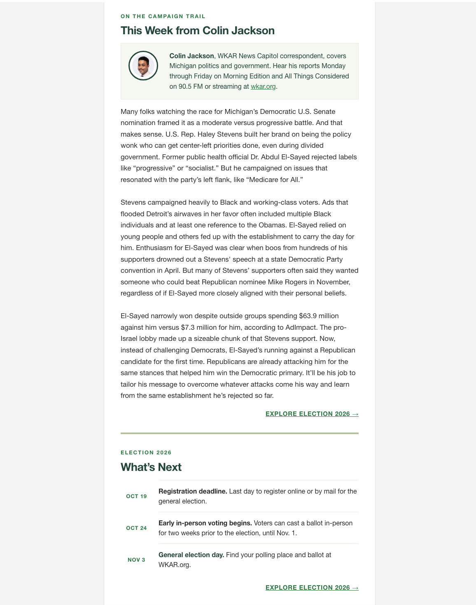

Conceived · Designed · Built · Systematized
The Signal
A weekly news briefing for mid-Michigan, launched in February 2026 and sent every Sunday morning since. It was my idea. I designed the identity, built the original product solo in four weeks, and wrote the contribution systems and module structure that let a small newsroom produce it every week without me touching it.
Every edition is built around named journalists: their beats, their voices, their faces. That is not decoration. It is the reason people open it.


Identity designed in-house by Andrew. The Signal wordmark and broadcast-signal mark, plus a Signal+ lockup for the midweek edition.
01 · Conceived
The idea was mine: a Sunday briefing that told mid-Michigan what its week would look like.
02 · Designed
Logo, type, color and module system, drawn and built by me, not commissioned.
03 · Built solo
Original product shipped in four weeks, start to first send in February 2026, with no additional headcount.
04 · Systematized
I wrote Producing The Signal 101, the operating manual the newsroom runs on.
Performance
The clicks are the story
Open rates industry-wide are inflated by Apple Mail Privacy Protection. Clicks are not. So the click and click-to-open numbers are the ones I lead with, and they are where The Signal separates most.
30
Original editions
49,053
Emails sent
27,367
Opens
3,973
Clicks
99.9%
Delivery rate
Launch to date · Feb 1 – Aug 9, 2026 · 28 Sunday editions plus the first two Signal+ editions · Mailchimp bot-filtered
55.9%
Open rate across 30 original editions, launch to date.
≈1.8× the media-publisher median
8.1%
Click rate. The number Apple's privacy changes cannot inflate.
≈7× the media-publisher median
14.5%
Clicks per unique open. The cleanest comparison available.
≈3.8× the media-publisher median
Launched February 2026. Figures above are the measured average across 10 consecutive weekly editions, June 7 – August 9, 2026, to roughly 1,670 subscribers. Benchmarks: Omeda Newsletter Benchmark Report for Media, H1 2026: 31.6% open, 1.16% click, 3.8% click-to-open median across 1.95 billion sends. No credible public-media-specific newsletter benchmark exists, so no such comparison is made here.
The Signal vs. the media-publisher median
Open rate
Click rate
Click-to-open
Month by month
Every month, well above the benchmark
Monthly click rate since launch. The lowest month still runs more than four times the industry median.
Mailchimp bot-filtered monthly totals, all Signal messages · benchmark: Omeda, H1 2026, 1.95 billion sends
Audience
The list grew while the rates held
Recipients per Sunday send went from 1,288 at launch to 1,673 on August 9, up 29.9%, without the engagement rates sagging, which is the usual trade. Unsubscribes ran at 0.21%.
1,288
Feb 1 launch
1,673
Aug 9 · +29.9%
The edition · Sunday, August 9, 2026
Seven named journalists in one edition
Original captures of the edition as sent. Nothing here is recreated or mocked up.







Politics, arts, classical, education, and a reporter sent to a town unannounced to see what she finds. Seven named journalists in one edition. That breadth is the product, and it is what a small newsroom can actually sustain when the system is written down.
The extension · Wednesday, August 5, 2026
The Signal+
A free midweek political briefing launched in late July 2026. Its first two editions averaged 52.0% opens and 4.1% clicks. A young product, disclosed as such.



Distribution is editorial work
I built the promotion too


Twelve promotional units produced in-house: IAB display, social squares, site banners and sidebars, in studio and flat variants. A newsletter nobody knows about is not a product; getting eyes on the work is editorial work, not a marketing afterthought.
The system behind it
Producing The Signal 101
I wrote the operating manual myself: who contributes what, when it is due, how a module is structured, how the voice works, and how the edition gets assembled and sent. It is the reason the newsletter survives a vacation, a hire, or a bad week.
A newsroom of this size cannot afford a product that depends on one person. So I designed it not to.
Contribution model
Named module owners, standing deadlines, one assembler on rotation.
Module structure
Every unit carries a byline, a headshot, a beat and a reason to click.
Freelance layer
A contribution model built in the wake of federal funding cuts, so the product did not shrink when the budget did.
Cadence
Sunday briefing, Wednesday midweek update, one shared production spine.
I'm an innovator, a dreamer, and an executor.